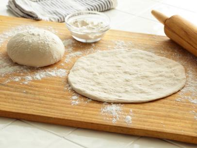

Pizza Dough

Description
This is just some normal pizza dough
It is fast to make and only takes a few ingredients
Try to imagine other foods you could make with this type of dough!
Ingredients
- 2 1/4 teaspoons active dry yeast
- 1 1/2 cups warm water (about 110 degrees F)
- 3 1/2 cups all-purpose flour, plus additional for rolling dough
- 2 teaspoons kosher salt
- 1/2 teaspoon ground white pepper
- 1 scant tablespoon honey
- 1 tablespoon extra-virgin olive oil, plus some additional for coating the bowl/greasing the trays
- In a large bowl, combine the yeast and warm water. Stir to dissolve the yeast and allow the mixture to rest for 5 minutes.
- Using a sieve or strainer, "sift" about half of the flour over the yeast mixture and blend until smooth with your hands. Add the salt, pepper and honey and mix to blend. Sift in the remaining flour and mix to blend.
- Lightly flour a cutting board or flat surface. Turn the pizza dough onto the floured area and knead for 3 to 5 minutes. The flour should feel smooth and the ingredients fully integrated. Place the dough inside a lightly oiled large bowl. Cover with plastic wrap and let rest in a warm place, about 1 1/2 hours or until doubled in volume.
- Press gently on the dough and turn it onto a floured surface. Divide the dough into 4 equal parts, rolling each quarter into a loose ball. Cover with a clean kitchen towel and allow the dough to rest for an additional 15 minutes. Flatten each ball, 1at a time, and roll into a 6-inch round. Place each round in a single layer on a lightly greased baking sheet.
- Tip for topping the pizza: Brushing the dough with olive oil can create a barrier that will help to prevent the topping from making the crust soggy.